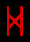

| The 3rd Eye is directly related to the 6th chakra and the pineal gland. It is located on the middle of the forehead above the brows and along with the 6th chakra that sets in back of the third eye and the pineal gland; it is the psychic sight of the soul. In the average person, the pineal gland is atrophied and dormant. Because of centuries of humanity being cut off from practicing power meditation where energy is circulated like blood where it is needed, many areas of the human soul have ceased to function. This is another sad result of Christianity. |
The third eye contains the last of the three knots. Once this knot is open and energy flows through, the crown chakra is easy to open. The third eye contains the astral sight. Through the third eye, astral images are transferred to the brain. The third eye is also important in telepathy and influencing others. I have found in willing others, thought energy should strongly be directed to the other person's third eye, even though this cannot be seen. The third eye is receptive to energy directed at it.
The third eye, along with the sixth chakra, controls the eyesight, the sinuses and the skin. It is with the third eye that we can see auras, do scrying and see energy. The pineal gland and the sixth chakra are behind the third eye.
The third eye is the front of the 6th chakra. The 6th chakra is where the Ida and Pingala serpents meet. When the kundalini pierces this chakra, it opens the last of the three knots. A flash of light is often experienced when this occurs. Opening the 3rd eye is a major step in consciousness.
 |  | About the Dagr/Dagaz Rune and its connection with the 6th chakra and the 3rd eye: |
The Dagr/Dagaz Rune corresponds with the Word trump of the Tarot. The World means completion. When we pierce through the 6th chakra, the 7th is effortless. This is the uniting of the Ida and the pingala. Dagaz is also the rune of the moon and the moon represents the 6th chakra and the 3rd eye. Dagr/Dagaz is the rune of completion. "This rune can be compared to the spiritual philosopher's stone. In sexual alchemy, Dagaz is the moment of orgasm in which the goal of the working is made real. It is useful in all workings of an 'alchemical' type, whether they be practical or solely concerned with consciousness."¹
_________________________________________________
Artwork: "Female Head" by Lenardo, 1508
¹ Teutonic Magic by Kveldulf Gundarsson
© Copyright 2005, Joy of Satan Ministries;
Library of Congress Number: 12-16457
BACK
TO MAIN POWER MEDITATION PAGE